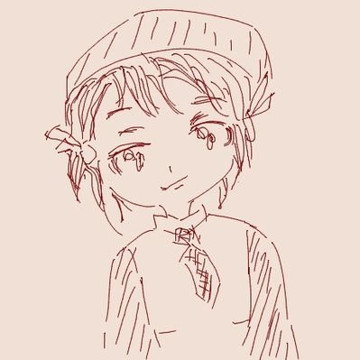

を、作る
N-Point
About Member Blog
News: あーさんがN-Pointにジョインしました
私達「N-Point」は、
イベント管理・運営専門同人サークルです。
IT/ゲームに関するイベントを開催しています。
また、イベント運営に必要なアプリなどの開発も行っています。
主な活動場所: 東京都渋谷区・港区・中央区・千代田区・大田区
2018年2月 MCC Talkoot
2018年10月 Minecraft Coders Conference
2018年10月 TENTOプレゼン大会2018
2019年4月 プログラミングLT 2019 Spring
2019年8月 プログラミングLT 2019 Summer(予定)
2019年11月 マイフェス2019(予定)
CEO
Twitter FacebookCVO(Chief Virtual Officer)・司会
Twitter Facebook総務・企画・広報担当
Twitter企画・映像音響
Twitterシステム・デザイン・音響担当
Twitter企画・映像音g響
Twitter Facebook広報担当
映像音響
Twitter Facebook映像・音響担当
Twitter企画・広報担当
Twitter Facebook企画・広報担当・司会
Twitter Facebook広報担当
Twitterシステム技術担当
Twitter
N-Pointで一緒に活動する仲間を随時募集しています。
イベントを盛り上げるオープニングなどの映像を制作するスタッフを募集します
Aviutl, Adobe AfterEffects, Premierなど、映像制作関連のソフトウェアが使える方のご応募をお待ちしています
イベントの品質に関わる、音響機器を管理調整するスタッフを募集します
イベント音響についてある程度の知識を持ち、イベントのストリーミング配信を踏まえたステージの配線が組める方の応募をお待ちしています
イベントを盛り上げるオープニング映像や、会場内BGMを制作するスタッフを募集します
制作した音源の著作権は作曲スタッフ自身に帰属するものとし、弊団体は本音源に関して非営利/営利を問わない恒久の使用権を持つものとします
イベントの運営や企画に必要なシステムの開発を担当するスタッフを募集します
開発したシステムの制作実績は各サービスに公開可能とし、弊団体は当該システムの非営利/営利を問わない恒久の使用権を持ちます